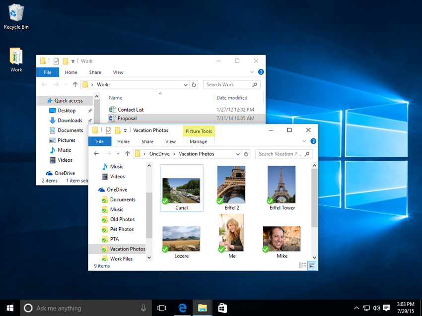

Operating systems usually come pre-loaded on any computer you buy. Most people use the operating system that comes with their computer, but it's possible to upgrade or even change operating systems. The three most common operating systems for personal computers are Microsoft Windows, macOS, and Linux.
Modern operating systems use a graphical user interface, or GUI (pronounced gooey). A GUI lets you use your mouse to click icons, buttons, and menus, and everything is clearly displayed on the screen using a combination of graphics and text.
Each operating system's GUI has a different look and feel, so if you switch to a different operating system it may seem unfamiliar at first. However, modern operating systems are designed to be easy to use, and most of the basic principles are the same.